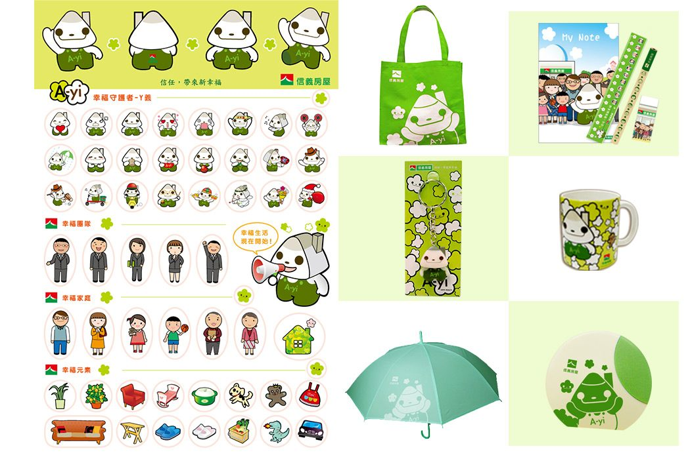
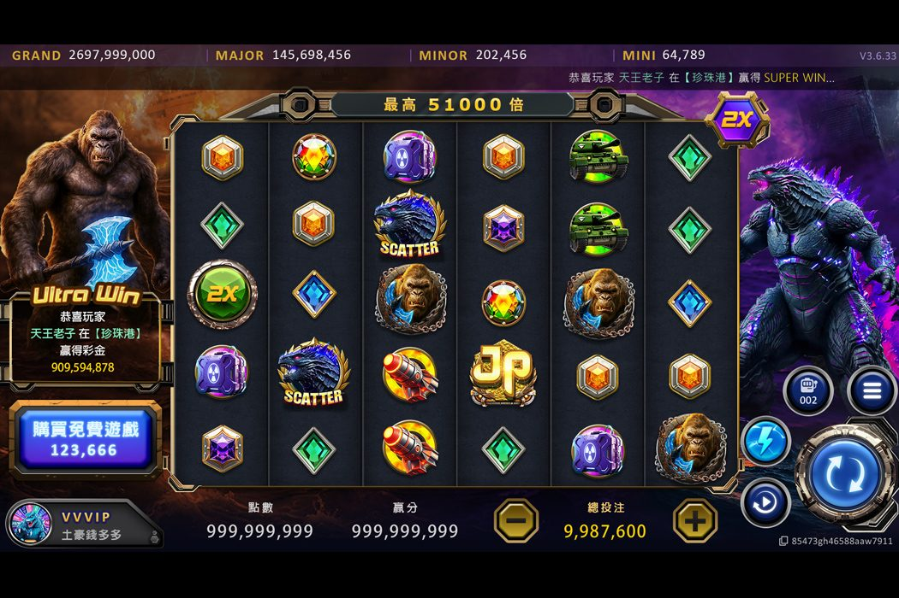
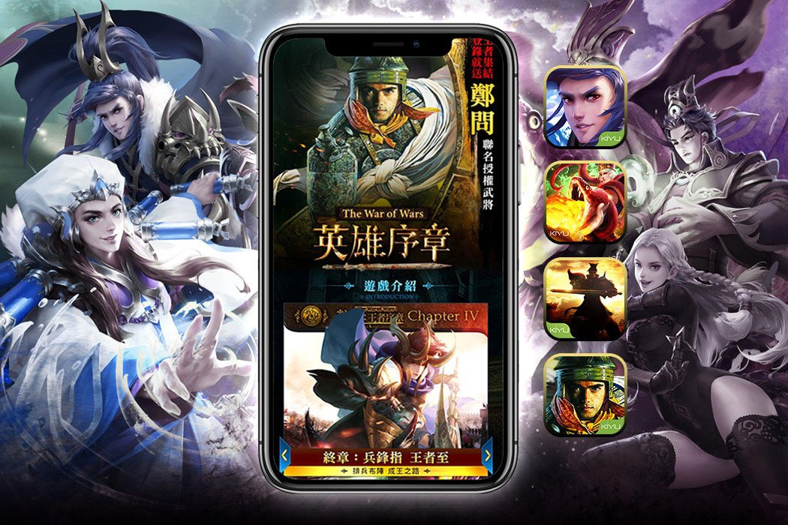

01 — 品牌 IP
信義房屋「阿義」IP 與輔銷系統
吉祥物「阿義」周邊開發與管理，延伸到門市輔銷物、文宣與櫥窗展示。獨立開發實體周邊 30+ 款，含成本與庫存管理。
新品開發率200%+成本平均降低40%+復購率200%+
Brand Visual Designer · Art Manager
資深品牌視覺設計師 · 美術專案管理
橫跨遊戲、品牌 IP 與數位產品，從視覺設計、UI/UX 到周邊開發與團隊管理，把創意落實成可量產、可上線的成果。

部門管理與專案整合、推行設計優化與 AI 應用、IP 品牌管理與行銷計畫執行、業務合作。
UI/UX 規劃與設計、2D 元件、網頁版型、廣告設計；參與 10 餘款遊戲專案。
部門管理與跨部門協調、設計規劃與執行、行銷策略與廣告分析。
部門管理與跨部門協調、設計規劃與執行。
吉祥物「阿義」IP 周邊開發、輔銷文宣與櫥窗展示。
系學會活動長
畢業展多媒體類第一名，代表至國父紀念館參展
Now
結合品牌美學、前端原型與演算邏輯的個人數位產品

人生策展品牌與記憶數位紀錄系統，整合玄學設計元素的美學演算引擎。
原創療癒遊戲，故事、世界觀、視覺到互動流程皆由我設計，MVP 開發中。

照片變專屬 LINE 貼圖的服務品牌，延伸客製實體周邊與 IP 角色。
Selected Work
完整作品請見網頁版作品集

吉祥物「阿義」周邊開發與管理，延伸到門市輔銷物、文宣與櫥窗展示。獨立開發實體周邊 30+ 款，含成本與庫存管理。

多款手遊與網頁遊戲的 UI/UX 規劃、2D 元件與場景設計，涵蓋老虎機、賓果、遊戲平台等類型。

20+ 款遊戲的主視覺、活動頁、事前登錄互動與廣告素材，依市場切換韓風、中式、歐美視覺語言。